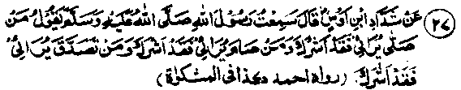
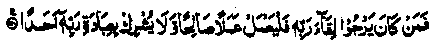
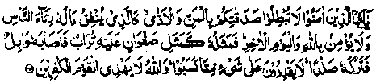
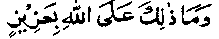

Chapter One · Section (b): Ahadith on the virtues of spending for the cause of Allah
25. Showing off Sadaqah is self-idolatry

Hadith 27
Rasulullah Sallallaho alaihe wasallam Says, "He who observes Salaat hypocritically (for show) attributes a partner to Allah, he who fasts hypocritically attributes a partner to Allah, and he who gives Sadaqah hypocritically attributes a partner to Allah.
Note: It means that whoever offers worship and prayers to please someone, makes him a co-sharer with Allah Ta'ala-, that is, the persons whom the worshipper wishes to impress are made partners with Allah Ta'ala, for whom his prayers are meant This is a very important subject on which this Chapter is being ended. The real object is that every prayer or worship should be purely for the pleasure of Allah Ta'ala-, it aught not to be corrupted by hypocrisy, publicity, respectability, etc., otherwise it may turn out to be a case of good deeds gone for nought while sins against you are' established. Many Ahadith contain severe warnings and threats of grave punishment on this account.
According to a Hadith Qudsi, Allah Ta'ala says, "I am most unconcerned among all partners: when someone joins anyone with Me in his worship, I leave the worshipper with him; that is, he may go to that partner for the return of his prayers, for I have no concern with him." Another such Hadith says, "On the Day of Judgment, a herald will proclaim, "Whoever ascribed a partner to Allah Ta'ala, in any of his deeds, should seek the reward from that partner of Allah Ta'ala, as Allah Ta'ala is most unconcerned with such partnership". Abu Saeed Khudri Radhiallaho anho says, "Once Rasulullah Sallallaho alaihe wasallam came to us when we were discussing Dajjal and told us, 'Shall I tell you a thing of which one should be afraid more than Dajjal?’ We submitted, ‘Please do tell’! He said, it is the latent Shirk (associating partners with Allah Ta'ala)'. For example, while praying with sincerity, a person notices someone watching him and, there upon, he prolongs his Salaat". Another Sahabi Radhiallaho anho has reported Rasulullah Sallallaho alaihe wasallam as saying, "I am most afraid for you of the minor Shirk". The Sahabah Radhiallaho anhum enquired as to what the minor Shirk was? At this he replied ‘Hypocrisy’. A Hadith says that on the day when Allah Ta'ala will distribute His rewards for good deeds of the good men, the hypocrites will be told to go to those for whom they had acted and see, if they have any rewards to offer them for their actions. Allah Ta'ala has said in the Qur’an.

"Whoever longs to meet his Lord (to become His beloved and favourite) must keep acting righteously and must not join anyone else with Allah Ta'ala in his prayers". (al-Kahf: 110).
Ibne Abbas Radhiallaho anho has said that someone submitted to Rasulullah Sallallaho alaihe wasallam that, when he started some good deed for the sake of Allah Ta'ala, he felt in his mind that people should see him making that effort Rasulullah Sallallaho alaihe wasallam kept quiet till the above Ayat was revealed. Mujahid Rahmatullah alaihe has said that someone said to Rasulullah Sallallaho alaihe wasallam that he gave Sadaqah with the intention of pleasing Allah Ta'ala but he did have the feeling that people should call him a good person; thereupon the above Ayat was revealed. A Qudsi Hadith quotes Allah Ta'ala as saying, "If anyone does a righteous action for My pleasure but seeks to please someone else also, I reject the whole of it, for, I accept only that deed which is purely for Me." After that, Rasulullah Sallallaho alaihe wasallam recited the above Ayat Another Hadith quotes Allah Ta'ala as saying, "I am the most Liberal in apportioning share with My partners, if someone makes another person My co-sharer in his worship for Me, I leave My share also with the co-sharer". A Hadith says that there is such a valley in Jahannam, that Jahannam itself seeks protection against it four hundred times a day, and that valley is for the hypocritical Qaaris (Qur’an reciters).
A Hadith says that Rasulullah Sallallaho alaihe wasallam asked the Sahabah to implore the protection of Allah Ta'ala from going to Jubb-ul-Huzn’ (the well of grief in Jahannam). They asked him as to who will go into it The reply was, "Those who act with insincerity 'ostentatiously)? A Sahabi Radhiallaho anho says that the above Verse was revealed last of all in the Holy Qur’an. In another place in he Holy Qur’an it is said:

"O those who believe, do not ruin your Sadaqah by reminding the poor of your favours to them or causing vexation. He is like a person who spends in charity, but as a show to the people; he neither believes in Allah nor in the Akhirah. This type of person resembles a smooth stone, which may get covered with soil (and some green growth), but all is washed away by a heavy rain. (Similarly, the Sadaqah of those who display their generosity, who are harsh towards the poor and who are hypocrites, shall vanish and not a particle of it will be available to them on the Day of Judgement). All the virtues and the charities given will become useless, (and their earnings will be of no avail to them)”. (al-Baqarah: 264).
Hypocrisy has been reproved strongly in several places in the Holy Qur’an.
One Hadith says that on the Day of Judgment the people, whose reckoning will take place first of all, will include a martyr. He will be called and reminded of all the bounties which he received from Allah Ta'ala in this life and asked what acts of virtue he had performed in return for those bounties. He will submit to Allah Ta'ala that, to seek His pleasure, he did Jehaad till he was martyred and gave his life for His sake. The Divine answer will be, "It is a lie; you went to Jehaad, to be called a hero by the people, which they have done". (So, your aim has been achieved)-The Divine verdict and order for him will be to throw him into Jahannam, which orders will be carried out by dragging him face foremost and throwing him into Jahannam.
The next person to be reckoned with will be an Alim (religious scholar). He will be reminded of all the Divine favours and bounties bestowed on him and questioned what the virtues were that he had done to show gratitude for it. His reply will be, "I acquired knowledge and taught knowledge to people and read the Qur’an, seeking your (Allah Ta'ala’s) pleasure". Allah Ta'ala’s verdict and order will be, "All of it is a lie; you did all that to be called a great 'Alim and Qaari by the people (which has been done)" He too will be thrown into Jahannam being dragged on his face.
The third person, who will have to give his account .will be a generous person, on whom Allah Ta‘ala had bestowed his favours and bounties extensively in this life and who will be reminded of everything given to him and questioned as to what he did with them. He will submit that he did not miss any opportunity of doing good and spending for Allah Ta‘ala’s pleasure-The Divine reply will be, "It is a pure lie; you spent entirely to be called a very generous man by the people, which they did (and your aim has been achieved)'' The order for him will also be, to be dragged on his face and thrown into Jahannam. In this Hadith, as well as in other Ahadith, the mention of one man implies all the people of his kind. It does not mean that only three persons will receive that punishment; rather, the three types of people will be treated in that manner; for the sake of illustration, only one individual of each type has been mentioned above.
Rasulullah Sallallaho alaihe wasallam has given very severe and heavy warnings to the Ummah that every action and deed must be done solely for Allah Ta‘ala,and extreme care must be taken in this matter, so that no mixture of hypocrisy, show and publicity is allowed to creep into our affairs. But we must take care of the deceit of Shaitan who, as a strong enemy, uses many ways of hostility against his victims. Invariably, he makes a person doubt the sincerity of his actions and for that he makes him give up his very important virtuous deeds. Imaam Ghazali Rahmatullah alaihe has said that Shaitan’s first move is to stop a person from doing a virtuous act and to create such thoughts in his mind whereby he does not even think of doing a good deed. But when a person is strong enough to oppose Shaitan in that effort, then Shaitan makes a fresh move against, him, by suggesting to him that he lacked sincerity in his prayers which rendered all his hard labour useless; as such there was no use of insincere worship. By creating such doubts and suspense, Shaitan succeeds in stopping a man from doing any type of good. When this happens, his purpose is fulfilled. Therefore, one must not stop doing good deeds, because of such doubts about sincerity, but go on acting and trying to achieve sincerity through prayers to Allah Ta'ala that He, by His Mercy and Kindness, may grant him protection against insincerity and save his good deeds from becoming valueless.
